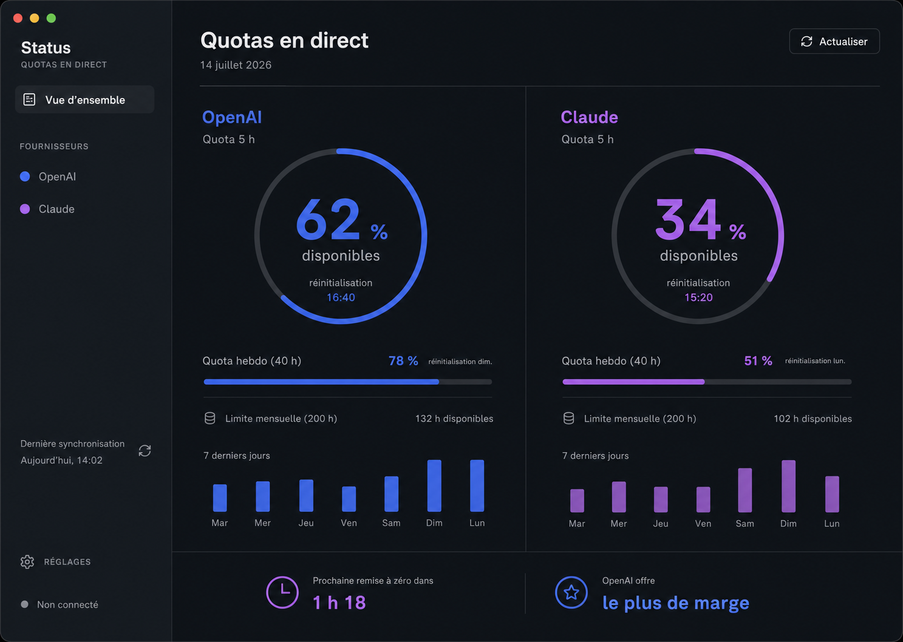
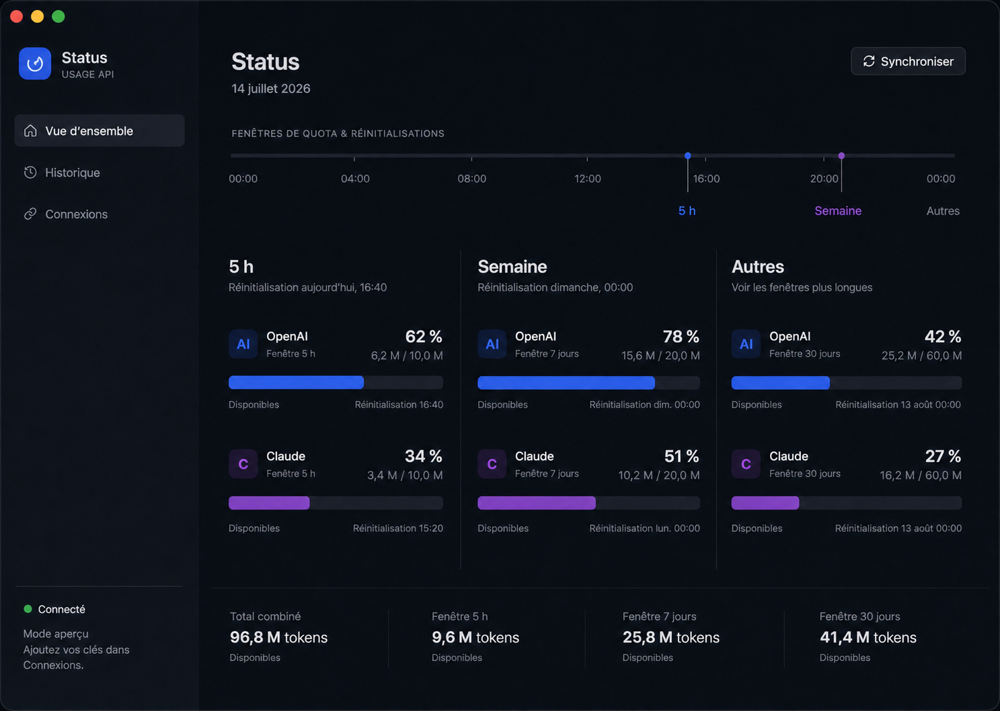
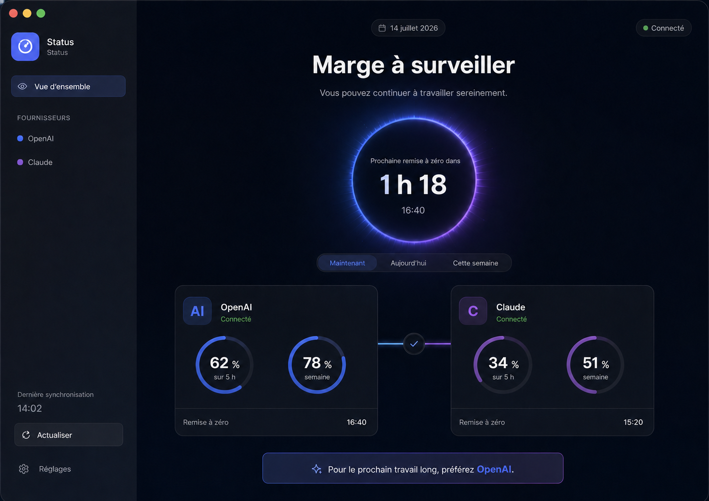
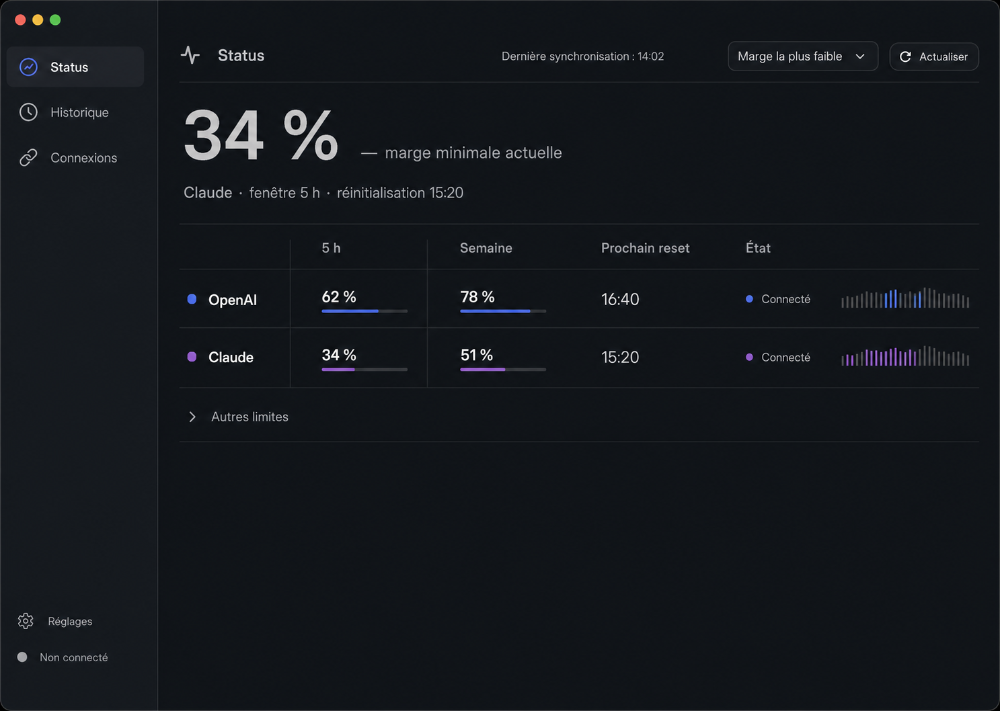
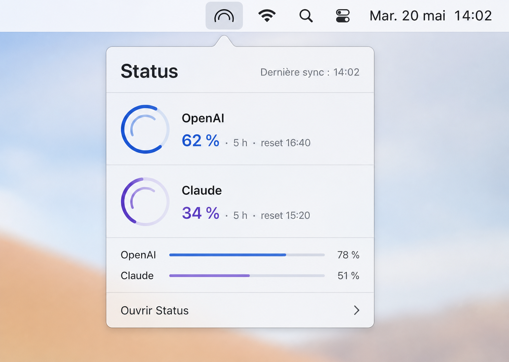
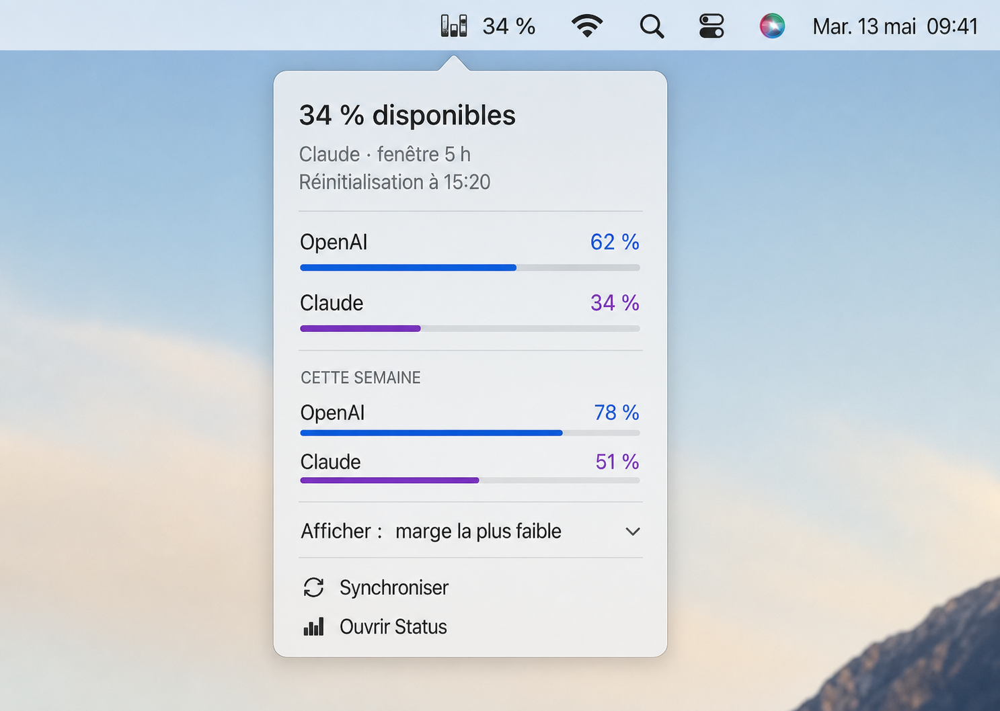
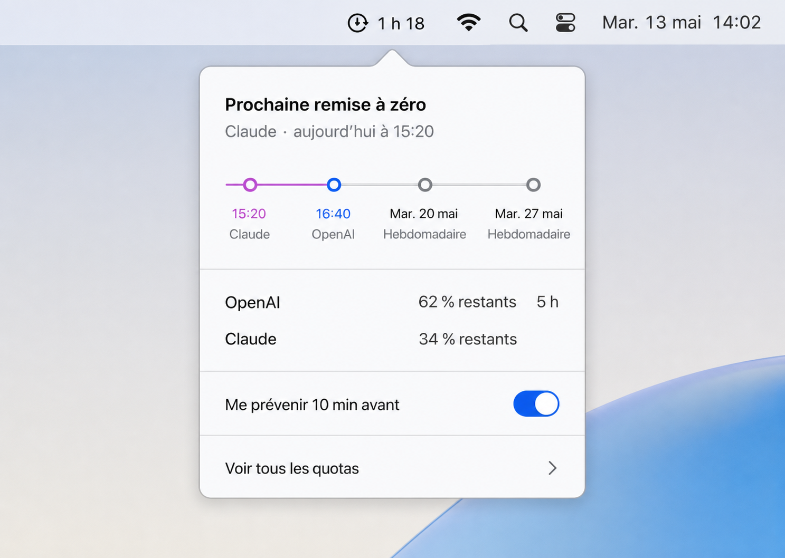
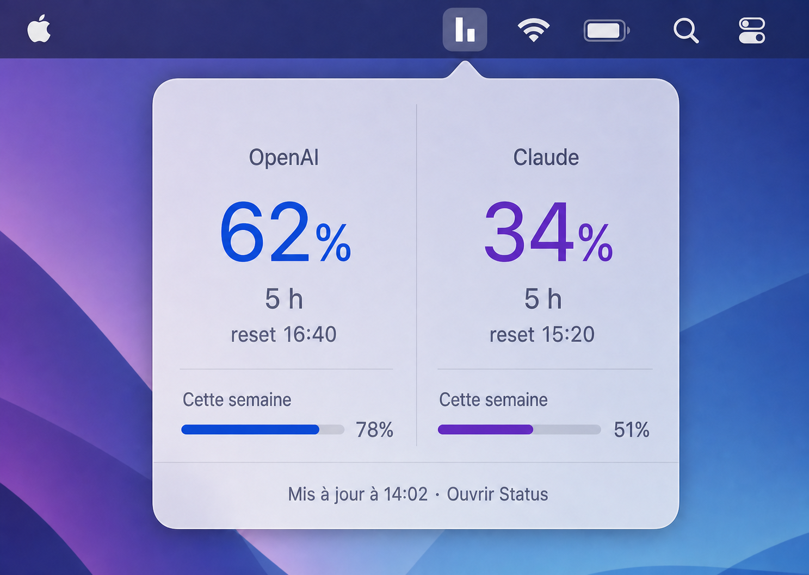

Recommandé
1. Twin Pulse
Le split-screen actuel, recentré sur les quotas 5 h et semaine.
Quatre directions pour la fenêtre macOS et quatre lectures pour la barre de menus. Les mêmes données réelles de démonstration sont utilisées pour faciliter la comparaison.

Le split-screen actuel, recentré sur les quotas 5 h et semaine.

Les limites sont organisées par horizon temporel pour comparer les fournisseurs ligne à ligne.

Une lecture émotionnelle et immédiate de la marge disponible et du prochain reset.

Une vue compacte, précise et typographique, proche d’Activity Monitor.

Deux arcs imbriqués pour garder les deux fournisseurs dans un symbole unique.

La marge la plus faible est visible directement dans la barre système.

Le temps avant la prochaine remise à zéro devient l’information principale.

Deux micro-barres sans texte pour une lecture discrète et instantanée.